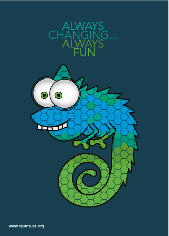

BRAND
This document describes the guidelines for the creation of the current campaign of marketing materials for openSUSE. Using this information should enable the community to create correctly branded materials for their needs.
A designer knows he has achieved perfection not when there is nothing to add but when there is nothing left to take away.
We think the openSUSE personality can be represented by colours. Using the same colours for all our materials is a way to express the mission and be recognized.
The light blue color is only an accent color and is intended to be used to call attention to a certain element or, in combination with the other colors, to show a diversity but maintain a solid design feel.
They’ll sell you thousands of greens. Veronese green and emerald green and cadmium green and any sort of green you like; but that particular green, never.
Click on the examples to the right to download the specific font variants used.
The Source Sans Pro Semi Bold and Open Sans Condensed font variants are used for titles and tag-lines, respectively
Open Sans Regular, Source Sans Pro Regular and Light are used for all other purposes
Type is a beautiful group of letters, not a group of beautiful letters
Download your choice of variants of the latest version of the fonts from google using the links below.
Source Sans Pro, Open Sans Condensed, Open SansEventually everything connects - people, ideas, objects. The quality of the connections is the key to quality per se.

Cartoonish chameleon showing the fun and interesting side of the openSUSE community. Mixing colors adds valuze through diversity.
Cartoonish chameleon showing the fun and interesting side of the openSUSE community. Mixing colors adds valuze through diversity.
Stylized light-bulb indicating the pursuit of new ideas. Together with the word "connect" it is an invitation for people with good ideas to realize them by participating in the openSUSE community

Text shaped as the facets of a cube show the primary values of openSUSE. Each rely on another and represent an inseperable whole.

Simplified rendition of the openSUSE motto "Get it! Discover it! Create it!". Continues the brand experience while offering a way forward.